Last Updated: 2020-07-16
Overview
MongoDB Atlas is a global cloud database service for modern applications. It allows developers to deploy fully managed MongoDB across AWS, Azure, or GCP. Using MuleSoft's MongoDB Connector, you can easily integrate your systems with MongoDB Atlas.
What you'll build
In this codelab, you're going to build simple Mule flow that exposes an HTTP endpoint. The flow will call MongoDB Atlas using the MongoDB Connector and return the response back to the user in JSON format.
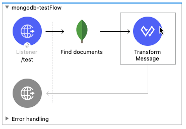
What you'll learn
- How to configure the MongoDB Connector for MongoDB Atlas
What you'll need
- Anypoint Studio 7.5.x
- Mule EE 4.3.0
- MongoDB Connector 6.1.1
- MongoDB Atlas
Create a new project
Open Anypoint Studio and create a new Mule Project

In the New Mule Project window, give the project a name (e.g. mongodb-atlas), select a Runtime, and then click on Finish
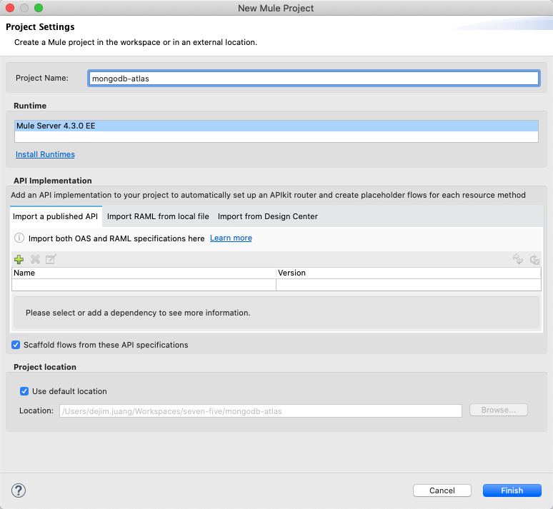
Once the new project is created, you'll be presented with a blank canvas. In the Mule Palette on the right, click on HTTP and then drag and drop the Listener into the canvas.
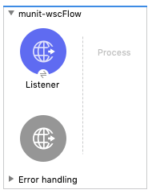
Add HTTP Listener Configuration
If the Mule Properties tab doesn't open, click the Listener icon and click on the green plus sign to create a new Connector configuration.

Under the General tab, and in the Connection section, take note of the port. By default this will be 8081. Go ahead and click on OK to accept the defaults and proceed.
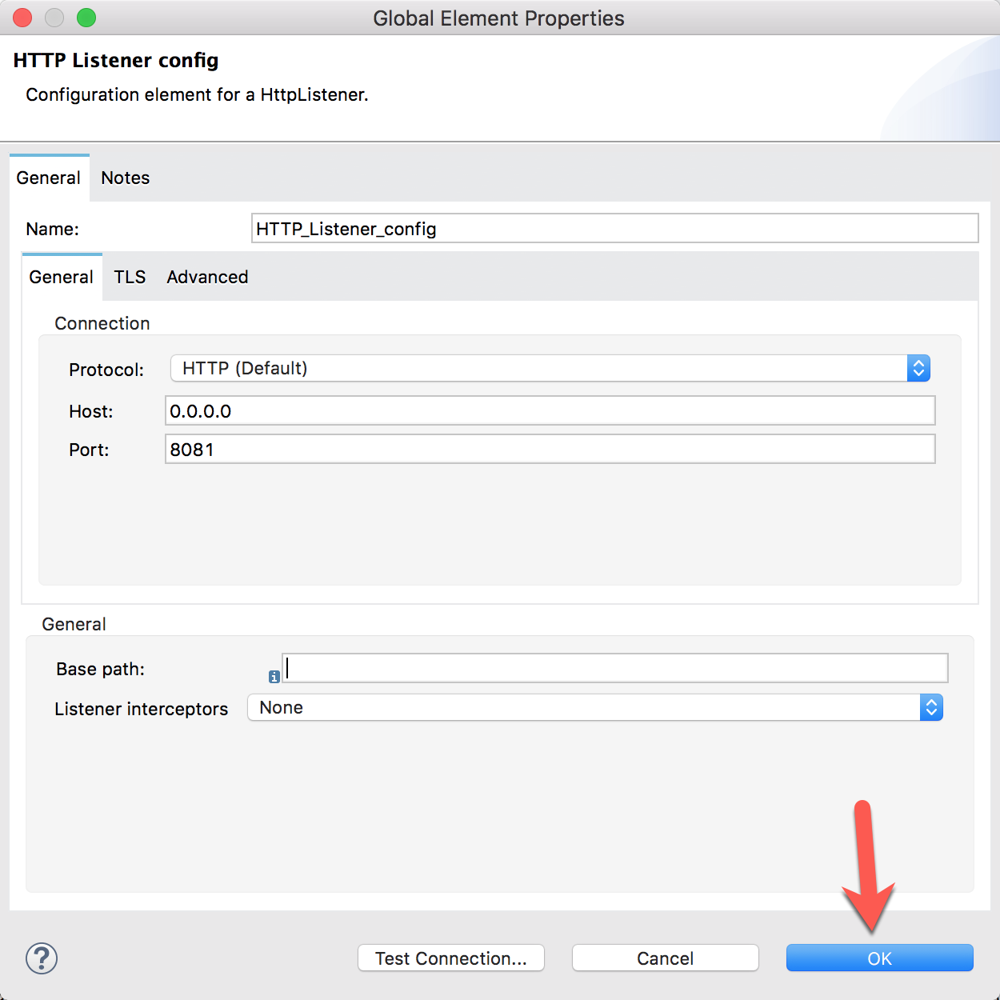
Set Listener Path
Back in the Listener Mule properties tab, fill in the Path field with the value /find.
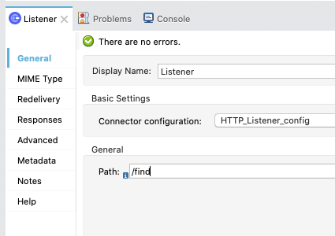
Add the MongoDB Connector
Back in the Mule Palette, we need to add the MongoDB Connector. Click on Search in Exchange
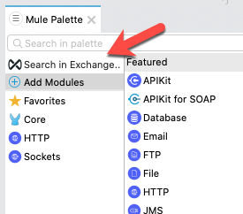
In the Add Dependencies to Project window, type mongo in the search box to find the connector.
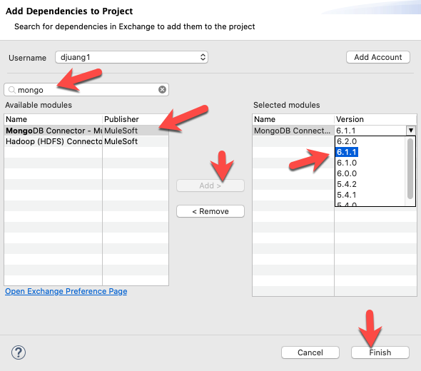
Select MongoDB Connector - Mule 4 and click on Add >
When the module appears in the Selected modules section, change the version to 6.1.1 and click on Finish.
From the list of operations for MongoDB, drag and drop the Find documents operation onto the canvas. Place it after the Listener module.
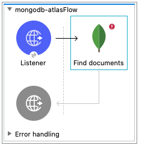
Add MongoDB Configuration
Select the Find documents processor to open the Mule properties tab. Click on the green plus sign next to the Connector configuration field.
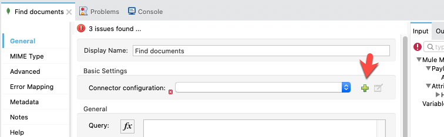
In the MongoDB Config window, click on Configure in the Required Libraries section to add the JDBC driver for MongoDB
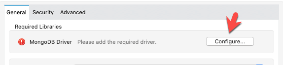
Next, click on the dropdown for Servers (host:port) and change it to Edit inline
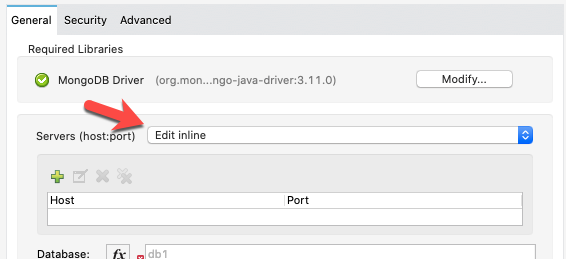
Click on the green plus sign and add the server addresses for your MongoDB Atlas cluster servers. There should be three different hostnames. The port 27017, which is the default, should be the same for all three servers.
After adding adding each server address, click on Finish
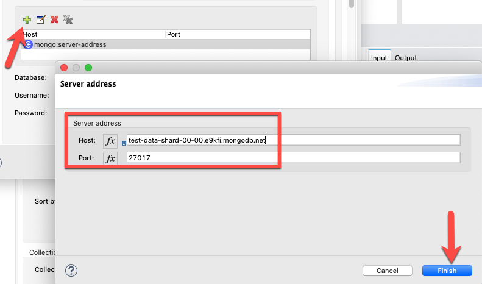
You can find your server host names by clicking on the cluster name in the Atlas dashboard for your Clusters.
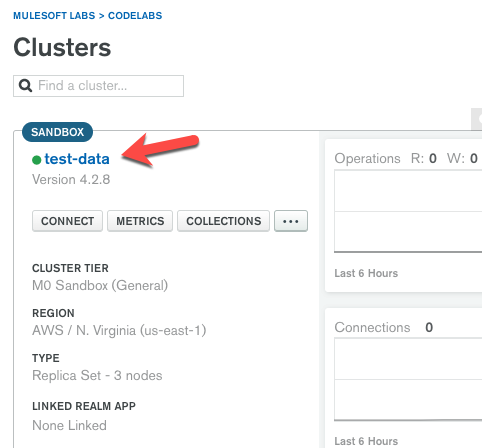
Once you click on the cluster name, you'll see the list of server addresses that you need.
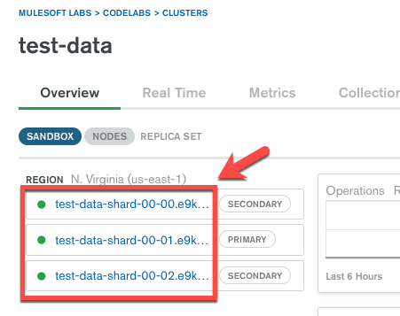
The result should look like the following.
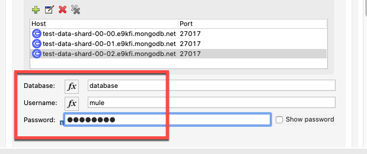
Fill in the Database, Username, and Password fields next.
You can find the database name under the Collections tab in Atlas. If you haven't created one yet, create one and give the collection a name as well. You'll need the collection name later.
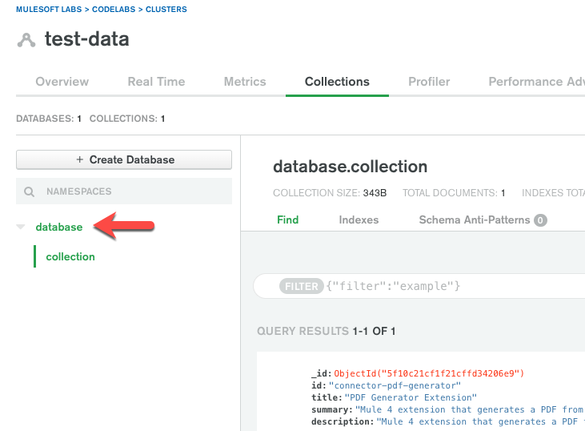
Next, click on the Security tab and change the Tls context dropdown to Edit inline. Check the checkbox that is labeled Insecure.
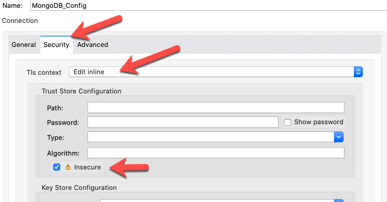
Click on the Advanced tab next.
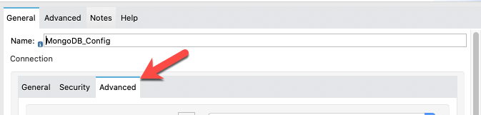
Set the Authentication mechanism dropdown SCRAM_SHA_1
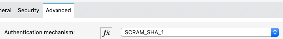
For the Replica set name, you can find that in the Atlas dashboard if drill down to any of the server details page of the cluster.
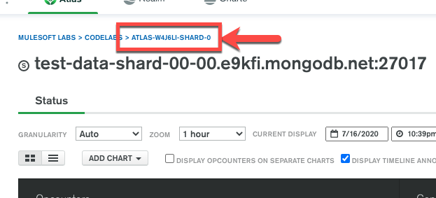
Be sure to type the value of the name in lowercase.
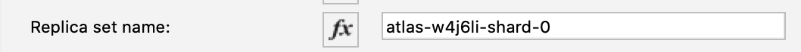
Set the Authentication source to admin
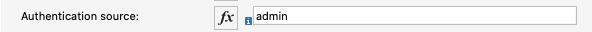
And then check the Retry writes checkbox. The screen should look like the following.
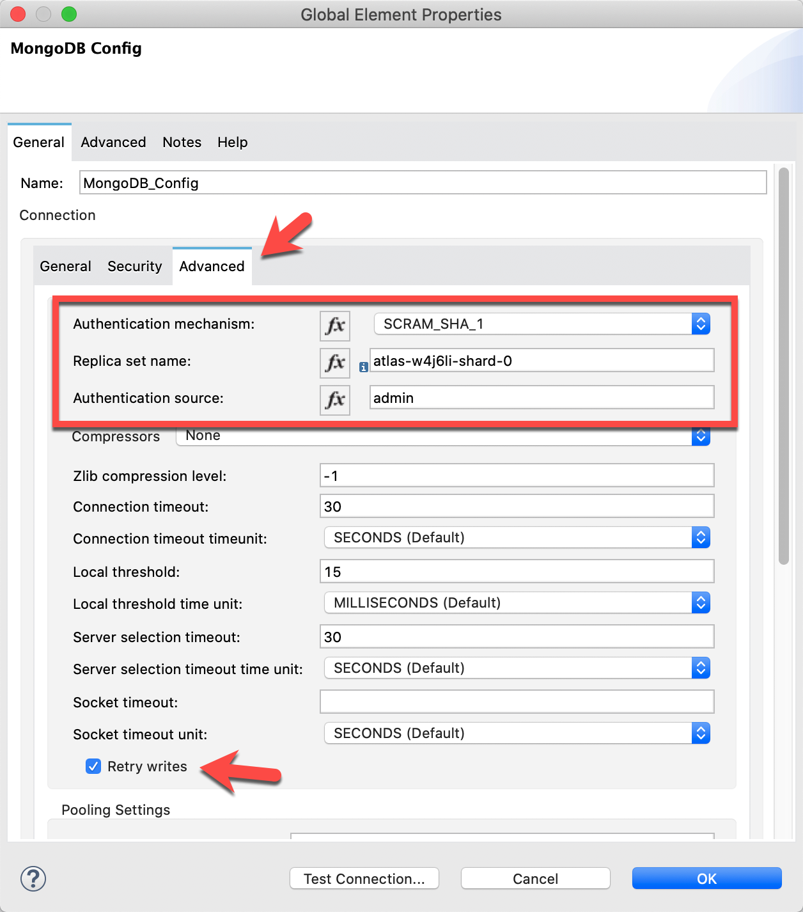
Next, click on the Advanced tab at the top of the configuration screen.
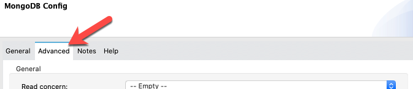
Set Read Concern to MAJORITY
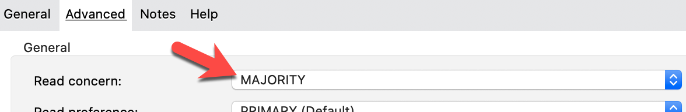
Set Write concern acknowledgment to majority in the Write Concern Options section. Be sure to type this in versus using the dropdown.
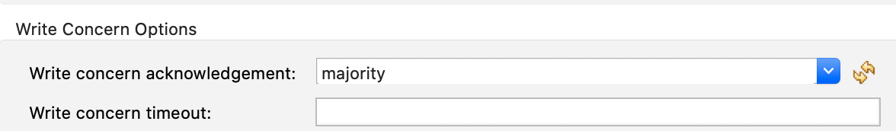
Click on Test Connection. If everything was configured correctly, you should see the following screen.
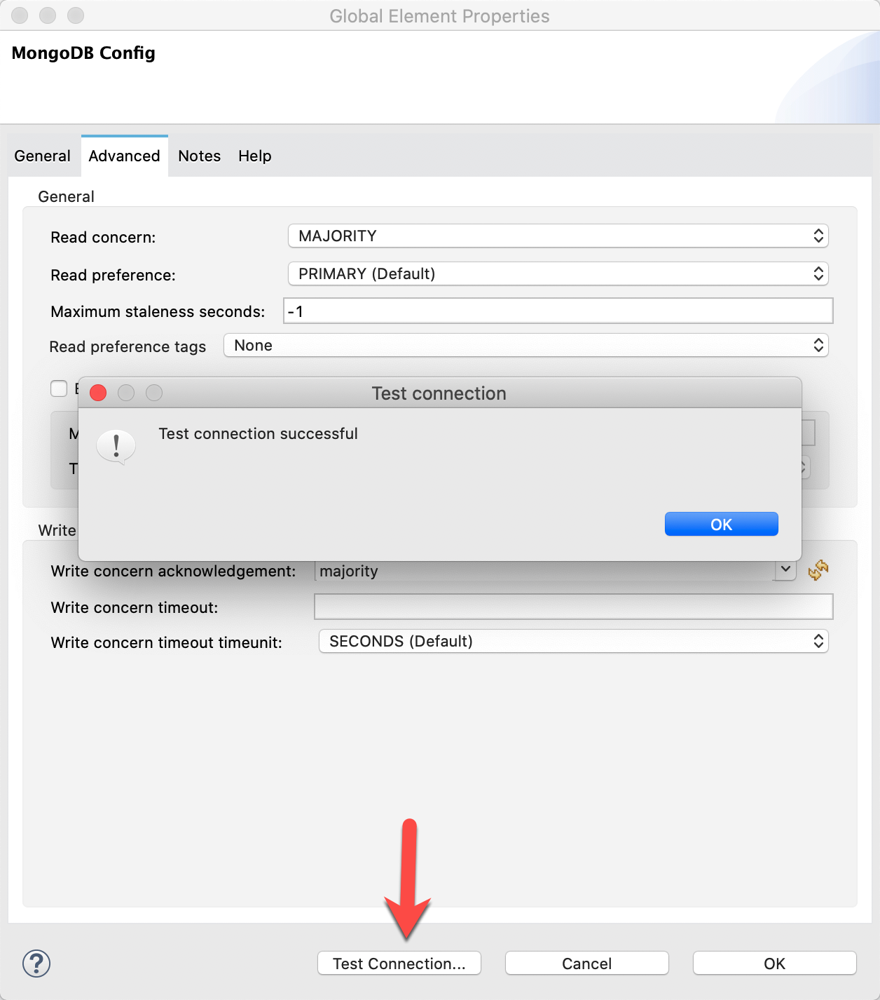
Click OK to close the window.
Back in the Mule Properties tab, click on the refresh button next to the Collection name field.
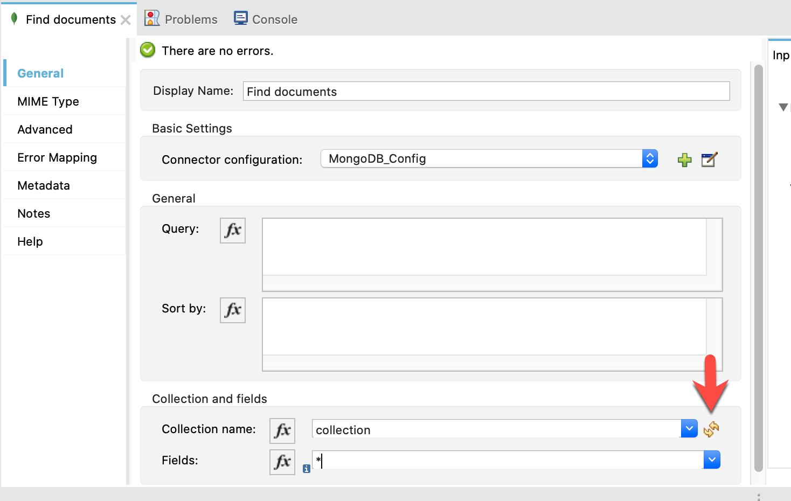
This should load the names of the collections in your database. Pick one that has some data.
Lastly, click on the Output tab and expand the Payload. DataSense will load the metadata for the collection and show the available fields. Pick some and type them into the Fields dropdown separated by commas.
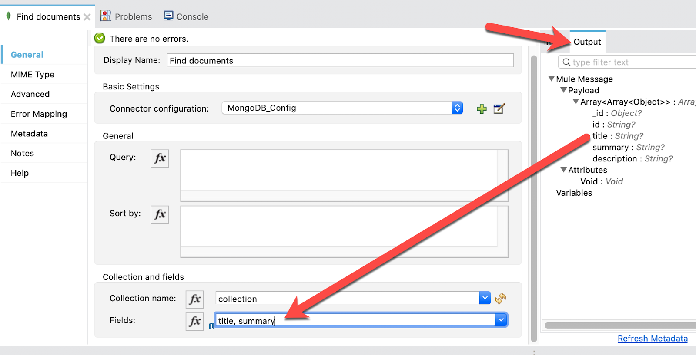
Add Transform Message
From the Mule Palette, drag and drop a Transform Message component and place it after the Find document operation.
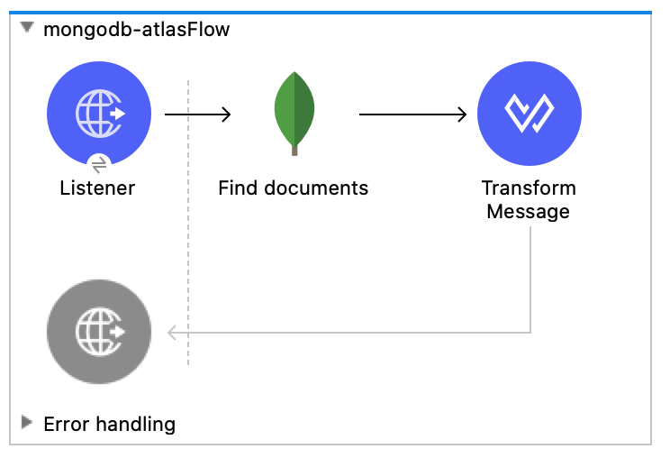
In the DataWeave script window, paste the following script in
%dw 2.0
output application/json
---
payloadThe tab should look like this.
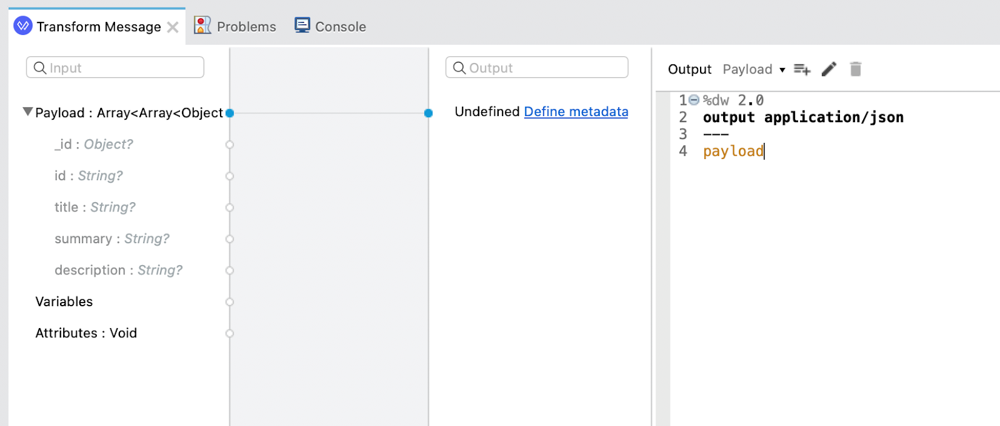
Run Project
Our next step is to test the flow we've built. In the Package Explorer, right click on the canvas and Run project mongodb-atlas
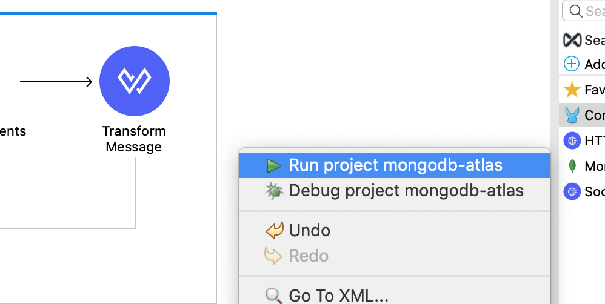
The Console tab should pop-up now. Wait for the status to show DEPLOYED before moving onto the next step.
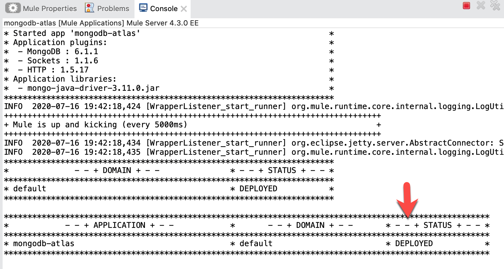
Test Flow
Let's test out our flow now. Switch to Google Chrome and enter the following URL from the table below. If everything was configured correctly, you should see the following result in your browser.
http://localhost:8081/find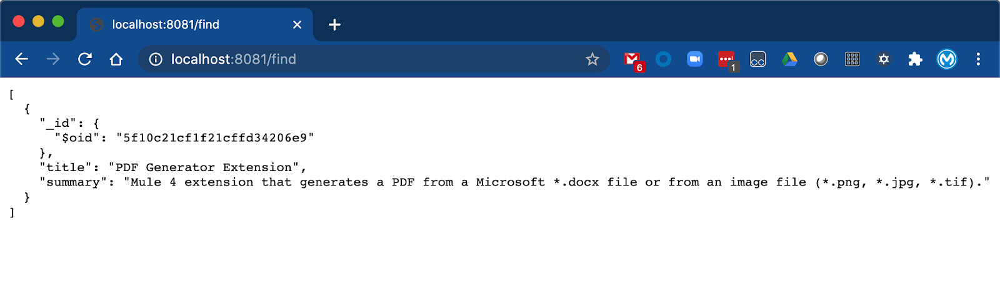
There are some subtleties to configuring the MongoDB connector to connect with MongoDB Atlas as you can see. Our MongoDB connector will evolve overtime to address these little nuances to conform to various MongoDB services both in the cloud and on-premises.
What's next?
Check out some of these codelabs...
- TBD